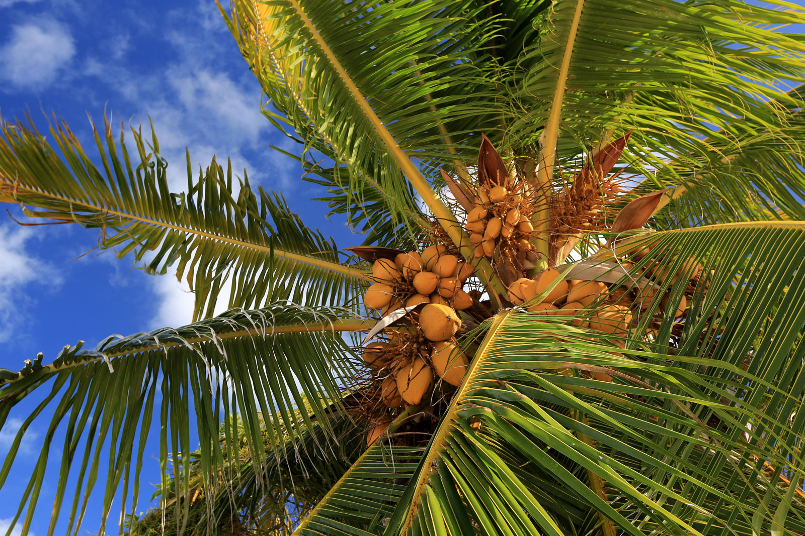

Andhra Pradesh, state of India, located in the southeastern part of the subcontinent. It is bounded by the Indian states of Tamil Nadu to the south, Karnataka to the southwest and west, Telangana to the northwest and north, and Odisha to the northeast. The eastern boundary is a 600-mile (970-km) coastline along the Bay of Bengal. Telangana was a region within Andhra Pradesh for almost six decades, but in 2014 it was carved off to form a separate state. The capital of both Andhra Pradesh and Telangana is Hyderabad, in west-central Telangana.
The state draws its name from the Andhra people, who have inhabited the area since antiquity and developed their own language, Telugu. Andhra Pradesh came into existence in its present form in 1956 as a result of the demand of the Andhras for a separate state. Although it is primarily agricultural, the state has some mining activity and a significant amount of industry. Area 106,204 square miles (275,068 square km). Pop. (2011) 84,665,533.
| State Emblem | Emblem of Andhra Pradesh | |
| State Animal | Blackbuck | |
| State Bird | Rose-Ringed Parakeet | |
| State Flower | Common Jasmine | |
| State Tree | Neem |  |
| State Fruit | Mango | |
| State Fish | Snakehead Murrel | |
The state has three main physiographic regions: the coastal plain to the east, extending from the Bay of Bengal to the mountain ranges; the mountain ranges themselves, the Eastern Ghats, which form the western flank of the coastal plain; and, in the southwest, the plateau to the west of the Ghats. The coastal plain, also known as the Andhra region, runs almost the entire length of the state and is watered by several rivers, flowing from west to east through the hills into the bay. The deltas formed by the most important of those rivers—the Godavari and the Krishna make up the central part of the plains, an area of fertile alluvial soil.
The Eastern Ghats are part of a larger mountain system extending from central India to the far south and running parallel to the east coast. Interrupted by the great river valleys, the mountains do not form a continuous range. They have highly porous soils on their flanks.
The plateau region in the southwestern portion of the state part of the Deccan (peninsular India) and commonly called Rayalaseema—is composed of gneissic rock (gneiss being a foliated rock formed in Earth’s interior under conditions of heat and pressure). It is highest in the far southwest, where elevations exceed 2,000 feet (600 metres), sloping downward toward the northeast. The Penneru River forms the main drainage system. As the result of erosion, the plateau is a region of graded valleys, with red sandy soil and isolated hills. Black soil is also found in certain parts of the area.
A summer that lasts from March to June, a season of tropical rains that runs from July to September, and a winter that lasts from October to February constitute the three seasons of Andhra Pradesh. Summers are extraordinarily hot and humid, with maximum daily temperatures exceeding 95 °F (35 °C) and even surpassing 104 °F (40 °C) in the central portion of the state. Summer nightly minimums drop to below about 70 °F (20 °C) only in the far southwest. Winters are somewhat cooler, with January maximum temperatures between 86 and 95 °F (30 and 35 °C) in all but the northeastern portion of the state. Winter lows drop below about 60 °F (15 °C) only in the extreme northeast.
Annual precipitation, which derives largely from the southwest monsoon rains, generally decreases toward the southwestern plateau area. Coastal areas receive about 40 to 47 inches (1,000 to 1,200 mm) per year, while the westernmost part of the plateau may receive only half that much. Rainfall totals in portions of the northeastern mountains exceed 47 inches and can be as high as 55 inches (1,400 mm).
Mangrove swamps and palm trees fringe the coastal plain of Andhra Pradesh, while thorny vegetation covers the scattered hills of the plateau. About one-fifth of the state’s total area is forest-covered, with dense woodlands occurring primarily in the Eastern Ghats. The forests consist of both moist deciduous and dry savanna vegetation; teak, rosewood, wild fruit trees, and bamboo are plentiful. Elsewhere in the state, neem (which produces an aromatic oil), banyan, mango, and pipal (or Bo; Ficus religiosa) are among the common trees. Andhra Pradesh also has an array of flowering vegetation, including jasmine, rose, and a number of endemic species—particularly in the hilly region of the Eastern Ghats.
Animal life, apart from common domestic types (dogs, cats, and cattle), includes tigers, blackbucks, hyenas, sloth bears, gaurs, and chital, which abound in the hills and forest areas. There also are dozens of species of birds, including flamingos and pelicans as well as some rare varieties, such as the Jerdon’s courser (Rhinoptilus bitorquatus), which is found in the thorny or scrub-covered areas surrounding the Eastern Ghats. The eastern coast is a nesting ground for sea turtles.
Agriculture, dominated by the production of food grains, is a major, although declining, sector of the state’s economy, in terms of value. Andhra Pradesh is one of the leading rice-growing states in the country and is a major producer of India’s tobacco. The state’s rivers—particularly the Godavari and the Krishna, but also the Penneru—account for its agricultural importance.
For a long time the rivers’ benefits were restricted to the coastal districts of the Andhra region, which had the best irrigation facilities. Beginning in the mid-20th century, however, great efforts were made to tap the waters of the Godavari, Krishna, Penneru, and other rivers by constructing dams and reservoirs that benefit both coastal and drier upland regions. Canal irrigation in the Rayalaseema region of the plateau has given rise to agro-industrial complexes rivaling those of coastal Andhra Pradesh. The Nagarjuna Sagar multipurpose project, diverting the waters of the Krishna for irrigation, has substantially increased the production of rice and sugarcane. Rice flour, rice-bran oil, paints and varnishes, soaps and detergents, cardboard and other packaging materials, and cattle feed are all produced from local paddy rice. Other agricultural commodities grown statewide include other cereal grains, pulses (peas, beans, and lentils), peanuts (groundnuts), corn (maize), and cotton—all of which are processed locally as well—and a variety of fruits and vegetables.
Animal husbandry has increased significantly in Andhra Pradesh, especially since the start of the 21st century. Livestock raising contributes roughly half as much in overall value as crop production. Animals raised include cattle, water buffalo, sheep, goats, pigs, and poultry. Dairy and egg production have grown dramatically.

Among the state’s principal mineral resources are asbestos, mica, manganese, barite, and high-grade coal. Low-grade iron ore is found in the southern parts of the state. Andhra Pradesh produces a major share of the country’s barite. It is the only state in southern India that possesses significant coal reserves. In the early 21st century, large deposits of natural gas were discovered onshore and offshore in the basins of the Godavari and Krishna rivers. The diamond mines of Golconda were once renowned worldwide for producing the Koh-i-noor diamond and other famous stones; efforts have been made to revive production in the area. Quartz, limestone, and graphite also occur. The state has established a mining and metal-trading corporation to lead the exploitation of its mineral resources.
Most of Andhra Pradesh’s energy is produced by thermal generators in the public sector. Hydroelectric power stations—notably those on the Krishna River along the Telangana border at Srisailam and Nagarjuna Sagar—provide an important secondary source of energy. In addition, the government has established several wind farms. A number of private companies operate generators powered by natural gas; they also have worked to develop wind, biomass, and other nonconventional power sources.
Andhra Pradesh since the mid-20th century has become one of the most highly industrialized states in India. Industry—including mining, utilities, and construction as well as manufacturing—contributes roughly the same value to the state income as does agriculture, although manufacturing itself accounts for only a small proportion of the overall income. Industries such as shipbuilding, aeronautics, and the manufacture of electrical equipment, machine tools, and drugs have been established in the Visakhapatnam area. Private enterprises, many of them located in and around the urban agglomeration of Vijayawada and Guntur in the east-central region, produce chemicals, textiles, cement, fertilizers, processed foods, petroleum derivatives, and cigarettes.
A number of important enterprises of moderate size, such as sugar factories, are scattered across the medium-size and smaller urban areas. There is a mammoth steel plant at Visakhapatnam, where raw materials and port facilities are easily accessible; an oil refinery also is located there, as is a large shipbuilding yard. The increase in power generated by hydroelectric and thermoelectric projects since the late 20th century has benefited industrialization and irrigation.
There are several airports in the state, notably at Vijayawada, Tirupati, and Visakhapatnam. An extensive road and rail system connects Andhra Pradesh with most other parts of India. Bus transportation, a large share of which is privately operated, offers facilities for express travel between various cities. The river canals in coastal areas, especially the saltwater Kommamur (Buckingham) Canal running parallel to the coast from the Krishna River south to Chennai (Madras) in Tamil Nadu, are used for cargo transportation. Visakhapatnam is a major international seaport.